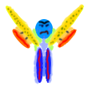

You are the Happy Bacteria, invading a human bloodstream!
To control your bacteria or colony:
If you are on a mobile device using a touchscreen, then use the touchscreen as a virtual joystick.
If you are not using a touchscreen, then use the arrow keys to control the direction of your movement.
Remember that you are in a bloodstream! The flow of the viscous liquid is not completely smooth. There are little eddies and vortices that can surprise you! The red blood cells are harmless, but you can watch them to see how the bloodstream is flowing in that part of the screen.
You want to eat Yums, and avoid Icks. Doing so will cause you to grow stronger. If you get strong enough, you will divide. The more you divide, the easier your survival.
You also want to avoid the mean Antibodies! They are very dangerous, and if they reduce your strength enough, they can reduce the size of your colony. If you are only a single bacteria, they can even kill you. If this happens, you lose!

If you divide enough to be a large colony (sixteen members), then the antibodies can't hurt you. In fact, you can overcome them. If you overcome five of them, you have overwhelmed the immune system, and your infection is successful! You win!